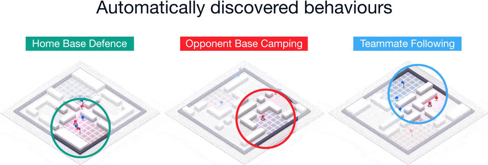

Video games are getting better every day thanks to AI research. Technology supports characters in games by improving and realizing their ways of moving, fighting or even conversing.
The OpenAI organization has already shown us the possibilities,
by prestenting their bots during the World Championships in Dota 2
Now scientists from DeepMind, a company owned by Google, taught the artificial intelligence to play the modified version of Quake III like a human being, and even a lot better.
It is worth mentioning that DeepMind already has a similar project in its account, which was implemented in cooperation with Blizzard, where AI faced professional players of Starcraft 2.
The team was focused mainly on the Capture The Flag mode, which takes place on new map in each match. So the program had to learn general strategies to be able to adapt to each map, that is something that comes to a man rather easily. Bots must also cooperate with team members, compete with the opposing team and be able to adapt to different styles of enemy playstyle.
"Our bots must learn from scratch, how to see, act, interact and compete in unknown environments, and it all depends on the individual outcome of the match: on whether their team won or not" - say scientists from DeepMind. They trained characters controlled by artificial intelligence so that they would behave like humans. Each of them has a goal that he wants to achieve, such as capturing the enemy's flag, while also defending their own.
The results of the training show that AI wins more often than people (which of course makes sense), but is also more focused on cooperation and achieving goals. Bots also learned behaviors similar to humans, such as following team members and camping in enemy bases.
It is not so hard to imagine the future in which eSports teams are using AI technology to improve their performance during daily training. However, keep in mind that players can not use any "cheats" during official tournaments, so they will still have to rely on their acquired skills.
